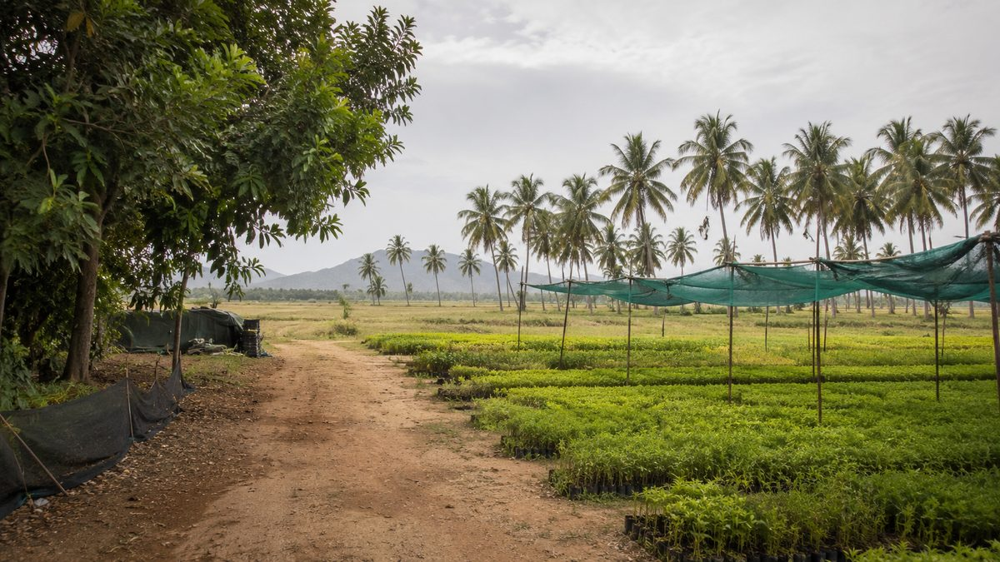
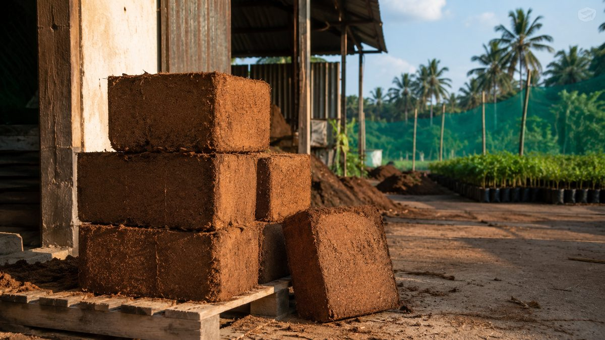
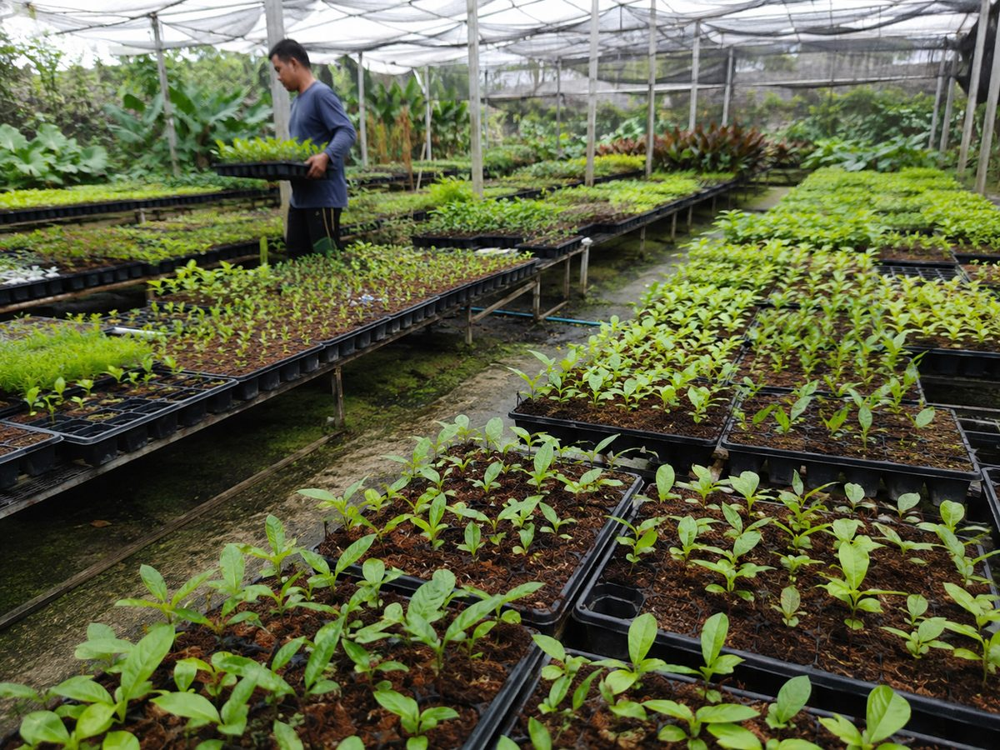

Certificate of originIndia
South India
Coir pith is not grown. It is what is left over once a coconut husk has been worked for fibre — which means it exists wherever husk is being processed, at whatever quality that processing leaves behind.
- Belt
- Tamil Nadu · Kerala · Karnataka
- Source
- Husk processing
- Season
- Affects moisture
OriginWhy the south
India's coconut belt runs down the south-west, and the coir trade sits inside it.
Tamil Nadu, Kerala and coastal Karnataka process coconut at a scale that supports an entire secondary industry around the husk. Fibre goes into rope, matting, geotextiles and upholstery. The pith that falls out of that process used to be waste, piled at the edge of the yard.
That is the whole economic reason cocopeat can be bought at a workable price from India: nobody grows a coconut for its pith. It is a by-product of something that was going to happen anyway, in a region that has been doing it for well over a century.
It also explains the variability. A by-product is only as consistent as the process it falls out of, which is why the choice of processing unit matters more here than the choice of country.

SeasonWhat it changes

Cocopeat has a season, even though nobody sells it that way.
- Monsoon
- Drying is slower and yards are wetter, which pushes moisture at the press upwards.
- Moisture
- Higher moisture means a heavier unit for the same volume, and it shows up as weight variance.
- Lead time
- Stretches in the wet months. Worth knowing before you commit to an arrival date.
If your arrival window is tight, tell us early. It is easier to plan around a monsoon than to explain one afterwards.
The point of buying at origin is not romance. It is the ability to change something before it ships.
A specification agreed in India can still be corrected in India. Once a container has sailed, it cannot.
ApplicationFull circle
The same material, at both ends of the trade.
Nurseries in the coconut belt raise seedlings in the pith that comes off their own doorstep. The greenhouses that buy it from us are doing the same thing several thousand miles away, under a drip line and to a tighter specification.
